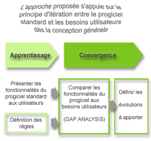

- Notre expérience de la gestion de projet (savoir-faire et outils) permet de contrôler les risques techniques
- L’appropriation par chaque niveau d’utilisateur s’obtient au travers de la matérialisation de résultats tangibles via des mises en production progressives du système
- L’obtention de résultats significatifs commence par l’adhésion de l’ensemble des acteurs concernés à la dynamique de changement qui doit être portée par le management intermédiaire, acteur clé de ce projet
- La garantie des délais s’obtient par la gestion des priorités à chaque itération du projet
- Respect des délais et des budgets
- Qualité et adéquation de la solution aux besoins
- Architecture technique cohérente et performante
- Equipes conjointes montées sur le projet
- Documentation technique / utilisateurs
- Outillage complet de la Conduite du changement (Pilote, Pré-déploiement, Déploiement)
- Formation de formateurs
- Minimise les investissements et les charges de maintenance
- Garantit l’évolutivité
- Garantit l’adéquation aux besoins
- Offre une transparence totale sur le projet
- Obtient l’adhésion des utilisateurs
- Minimise les charges de formation
- Respecter le planning projet
- Maîtriser le processus de changement
- Il est fondamental que tous les acteurs du projet partagent les concepts et fonctionnalités déjà existantes dans le progiciel
- « Coller » le plus possible aux fonctions standard permet de garantir la pérennité et la portabilité de l’application
- Par rapport au périmètre potentiel du projet, la couverture fonctionnelle du progiciel peut être schématisée comme suit :

L’appropriation projet par chaque niveau d’utilisateurs s’obtient au travers de la matérialisation progressive de résultats tangibles via des prototypes et des mises en production progressive du système (approche par modules) afin de :
- Garantir l’adéquation aux besoins et stabiliser les spécifications
- Garder le contrôle de chaque étape en travaillant sur un périmètre limité
- Minimiser l’effet ‘tunnel” et de maintenir la motivation des utilisateurs
- Garder le contrôle sur les délais du cycle de livraison des versions
- Minimiser l’écart avec l’existant (change management moins important) en déployant graduellement les fonctionnalités
- Obtenir l’adhésion des utilisateurs
- Minimiser les charges de formation
- Offrir une transparence totale sur le projet
- Obtenir rapidement un retour sur investissement
- Le lot doit être composé de sous-ensembles cohérents
- Les fonctions apportées doivent être perçues comme un « plus » par les utilisateurs
Les fonctions mises en œuvre doivent être priorisées :
- Le contenu des lots doit donc faire l’objet d’une analyse permettant de trouver la meilleure adéquation entre, d ’une part, le coût et le délai d ’obtention des fonctions et, d ’autre part, la priorité accordée à ces fonctions vis à vis de la stratégie métier
- Sur un autre plan, la priorité sera donnée à la cohérence et la « sûreté » de la mise en production plutôt qu’au maximum de fonctionnalités présentes